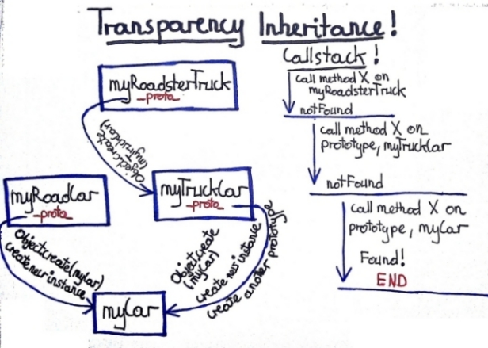

Why you always start from theB beginning? Why we learn something which is almost the same in all languages?
If you know well other languages, you should start from the biggest differ features. You should start from something which we can call “ideas behind language”.
Body represents something which you can touch, something which can use up. Soul are all stuff which remains the same no matter how old are you.
We are just “friends”. It is for those who know me and really don’t understand my simply interest with javascript.
It is really something big if you convince guys with many years experience, with master skills in such a languages like Java or Ruby put theirs attention to this tiny languages starting with small “j”. There is something money can’t buy :)
I will not try convince you to get better with javascript for better js code. Maybe you will not have to, maybe you will. Maybe in the next year we can deal with “super magic” DSL (better than coffee script), which do all work for us.
If you can understand the good and bad idea behind some language you can search it or omit in another.
I will try convince you to “use” this simply language as a “excuse” to better understand object oriented programming.
We try to remembered how programming use to look like and how it has changed. We look in this context to javascript.
We will see if javascript besides of its age and “body” is in step with mainstream languages such as ruby.
Back to your childchood, try to remembered your first steps. Methods with many lines of codes, programs base on one class, conditions almost looks like De Morgan’s laws.
We can learn from a few developers generations, that if somthing is less complicated than it is better.
var pussInBoots = {
weight: 11,
speed: 10,
numberOfMouseKilled: 3,
danceSkillLeve: "low",
eye: "very dark",
drinkWine: function() {},
takeOffBoots: function() {}
};
From many years, through such a languages like C++, Java, C# and even Ruby, the base way to create new object instance is Class.
We have a domain class Invoice. Invoice have a lot of fields like total price, tax, payment date and few behaviors.
After some time our client request for pdf, html and csv invoice support. Some "guy" who may not understand very well DRY has found tool Printer which actually do all the work. He inherit Invoice from Printer. He think that this functionality comes for free. Everything works well, he is happy.
It is well know example with shapes. Like square and rectangle and area calculation. I think just everybody knows those examples if not see this or read this.
The idea behind "shapes examples" is that if you inherit and change base behaviours you can very easy violates contract between collaborator and his client. It is much more harder to see than violation from previous example because it can be see only in term of client. Not in isolation.
Priest, particularly good and honest. He help poor people, give them food, cloths. He try to teach other how to live and not hurt anybody. However, when night comes, he become thief and still charities.
In real World the same object (priest) can has many different behaviours "the good man" and "the bad man". In our code will be impossible to create class which contains behaviours for "the good" (priest) and the bad (thief) without violating SRP principle.
First of all class are not unique, the same violation of principles can be done with modules or functions. Maybe with classes it is much more easier maybe not.
The problem is that, OOP was create to close our code to domain. In this case in many languages classes have significant role. However, it seems to the same classes keep as still far away from domain.
Forget for a moment about classes. Make one step back and try remembered on what OOP creators base on. Go back to the nature.
In nature one concrete specimen has been "created" by other concrete specimen. Not by some kind of "still life".
Dog, cat, capybara, fly, duck are "creating" by other dogs, cats, capybara, flies, ducks. Not by plastic dogs plush cats, jelly capybara, mechanical flies or steel ducks.

See code example
It allowed us to create new objects base on other objects - like in nature.
I love my first car so much that I want my next cars (myRoadCar, myTruckCar, myRoadsterTruck) look almost the same like myCar.
No matter if we create new instance or new group of objects it looks exactly the same.
MyRoadCar is like "next instance" of myCar, myTruckCar is full working truck but is also something more. It is base (parent) for myRoadsterTruck.
We don’t need anymore additional abstraction like class. All what we need is object and piece of code.
In the same way we can create “new instance” and new group of objects.
One solution for wrong inheritance which violates SRP (Invoice and Printer example) can be composition. In javscript through prototype we get it for free. It is natural, easy and without any overhead.
Ruby mixin example:
module Printable
def print_to_pdf
puts "Text as pdf: #{self.details}"
end
def print_to_html
puts "Text as html: #{self.details}"
end
def print_to_csv
puts "Text as csv: #{self.details}"
end
end
class Invoice
include Printable
attr_accessor :details
end
tv_invoice = Invoice.new
tv_invoice.details = "tv invoice for march equal 120 pln"
tv_invoice.print_to_pdf if tv_invoice.respond_to? 'print_to_pdf'
mobile_invoice = Invoice.new
mobile_invoice.details = "mobile invoice for april 89 pln"
mobile_invoice.print_to_csv if mobile_invoice.respond_to? 'print_to_csv'
Javscript mixin example:
(function(){
var printable = {
printToPdf: function() {
console.log("Text as pdf: " + this.details);
},
printToHtml: function() {
console.log("Text as html: " + this.details);
},
printToCsv: function() {
console.log("Text as csv: " + this.details);
}
};
var invoiceMaker = function()
{
var _details;
var _that = Object.create(printable);
_that.details = _details;
return _that;
};
tvInvoice = invoiceMaker();
tvInvoice.details = "tv invoice for march equal 120 pln";
if(tvInvoice.printToCsv !== undefined) tvInvoice.printToCsv();
mobileInvoice = invoiceMaker();
mobileInvoice.details = "mobile invoice for april 89 pln";
if(mobileInvoice.printToHtml !== undefined) mobileInvoice.printToHtml();
})();
Generally example in Ruby and Javascript do the same thing - delegate some behaviours to new instances.
In Javascript is even easier because we don’t need additional abstractions such a classes or modules.
After all Javascript like for old man seems to be very fresh. It also seems to be ideally language for domain driven maybe using DCI, who knows :).
/
#